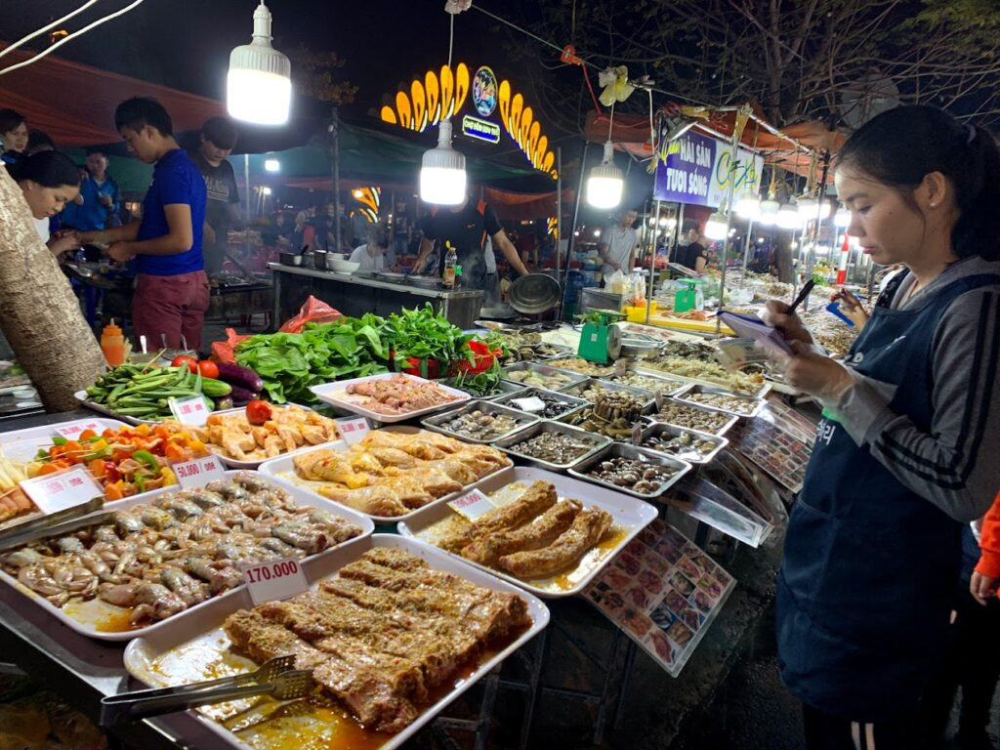

Quick answer: For evening food, head to the An Thuong strip near the beach or Con Market's night stalls. For seafood, it's Son Tra Night Market, no contest.
Han Market only runs in daylight hours, but it's still your best bet for souvenirs.

Experience Guide · Da Nang · 2026
Best Night Markets in Da Nang 2026
What to buy, what to eat, and which markets are worth your evening versus which ones you can skip without regret.
Han Market - Cho Han
Han Market (Cho Han) sits on the west bank of the Han River in central Da Nang. It's a genuine covered market with roots back in the French colonial era, though the building itself is newer.
It's a daytime market, not a night one: vendors are open roughly 6am to 6pm, and the fish and produce trading happens earliest, before the heat sets in.
What Han Market is For
This is the market for souvenir shopping and packing things to take home. The ground floor is fresh produce and seafood, worth a walk-through for the sights and smells, but not what you're actually here to buy.
Head upstairs for the tourist-facing stalls: silk, ao dai, tailored clothing, lacquerware, handcrafts, conical hats, coffee, and the usual souvenir spread.
Worth buying here: silk scarves and fabric, priced better than in hotel gift shops, ready-made ao dai (the traditional Vietnamese dress), local coffee at market prices instead of tourist markup, and lacquerware. Opening prices are inflated, but everything here is negotiable, see below for how.
What to Skip at Han Market
Pre-packaged "traditional" snacks with no clear origin. Anything sold as pure silk that you haven't felt with your own hands, real silk is cool to the touch, lightweight, and doesn't pill when you rub it between your fingers.
Mass-produced trinkets you'd find cheaper at any tourist shop in the city. And skip buying the raw seafood downstairs unless you've actually got a kitchen to cook it in.
Han Market hours: 6:00am - 6:00pm daily. Go between 8am and 4pm on a weekday, when stalls are fully open and you're not fighting the morning crowds.
Skip the last 30-60 minutes before close, vendors are packing up and not interested in negotiating.
Con Market - Cho Con
Con Market is Da Nang's biggest covered market and a genuine local institution, not a tourist production. Clothing, household goods, electronics, fabric, food, all of it under one roof.
By day it's mostly locals shopping for daily life. By night, the streets ringing the outside of the building turn into a loose, unplanned food scene that's worth seeking out for cheap, real eating.
"Da Nang's Son Tra Night Market operates along the Han River and is one of the better evening markets in Vietnam, less tourist-curated than Hoi An, more local, and a genuinely useful source of cheap seafood and street food."
Evening Food Stalls Around Con Market
Starting around 5pm, the streets around Con Market fill with vendors selling banh xeo (sizzling shrimp and bean sprout crepes), banh mi, fresh spring rolls, bun bo Hue, grilled corn, and sugarcane juice. This is local eating at local prices: a full meal runs 40,000-80,000 VND ($1.60-3.20).
It's loud, crowded, and unmistakably Vietnamese. You order by pointing.
You sit on a plastic stool. You might need Google Translate.
That's exactly the point.
Con Market for Shopping
During the day, the indoor sections are worth a look for fabric (local tailors can turn it into a custom ao dai or other clothing), shoes, cosmetics, and everyday goods at real local prices. It's rougher around the edges than Han Market and far less geared toward tourists, which means cheaper prices but also more patience required to navigate it.
Con Market hours: Indoor market 6:00am-7:00pm. The street stalls around the perimeter run roughly 5pm to midnight, busiest between 6pm and 9pm.
Son Tra Night Market - Seafood Focus
Son Tra Night Market is where you go for seafood, full stop. It's on the Son Tra Peninsula and functions less like a market selling goods and more like an open-air seafood eating ground.
If you want fresh grilled seafood for noticeably less than beachfront restaurants charge for the same fish, this is it.
What to Eat at Son Tra Night Market
Pick your seafood straight from the live tanks (lobster, crab, clams, scallops, shrimp, fish) and the vendor grills or steams it to order. Grilled clams with chilli and butter, steamed crab, salt-and-pepper fish, and prawns done a few different ways are all standard.
Agree on price with the vendor before anything hits the grill: settle the price per kilogram and the expected total up front.
A seafood meal for two runs roughly 300,000-600,000 VND ($12-24), depending on what you order and how well you negotiate. Lobster isn't cheap here, expect 400,000-700,000 VND per kg ($16-28).
Clams, scallops, and the smaller shellfish are where the real value is.
Getting to Son Tra Night Market
A GrabCar from My Khe Beach takes 15-20 minutes and runs $4-7. Getting a Grab back late at night from Son Tra can be hit or miss, ask your hotel to arrange a return transfer, or walk toward a busier street before you try to book one.
Pricing at Son Tra seafood: Agree on the price before anything gets cooked. This isn't a suggestion, it's how the whole system runs.
Ask "bao nhieu?" (how much?) and point at what you want. Get the total confirmed on a phone calculator if you can.
Disputes over the final bill are the single most common tourist complaint at seafood markets anywhere in Vietnam.
An Thuong Food Strip - The Tourist-Friendly Night Scene
An Thuong is the neighbourhood just back from My Khe Beach, built around An Thuong 2 Street and the blocks nearby. It isn't a market in the technical sense, it's a cluster of restaurants, bars, and food carts that's grown into the default evening spot for travellers staying near the beach.
What An Thuong Offers
From about 5pm on, the strip fills up with outdoor tables, street food carts, restaurants, and bars. The range is broad: Vietnamese street food alongside burgers, pizza, Korean BBQ, and a heavy dose of cafe culture.
English menus are everywhere. Come here when you want options and don't feel like navigating a proper market to get them.
This is also where Da Nang's backpacker crowd tends to gather at night. Bamboo 2 Bar and a few nearby spots function as informal meeting points for travellers.
It's not the most authentic slice of Vietnam you'll find, but it's a genuinely good time and an easy base for a night out near the beach.
Food Prices on An Thuong
Street food carts: 30,000-60,000 VND per dish. Local restaurants: 80,000-150,000 VND for a full meal.
Western restaurants and bars: 80,000-200,000 VND per main, 80,000-150,000 VND for cocktails. Pricier than Con Market, but still well under what beachfront resort restaurants charge for the same kind of meal.
Helipad Area - Evening River Dining
Around the helipad area on the Han River, especially along Bach Dang street and the blocks just north and south, you'll find a run of evening restaurants and food vendors that make for solid riverside dining. The draw here isn't really the food, it's the setting: Dragon Bridge lit up, river views, that whole scene.
The crowd is a mix of locals and tourists. Seafood, Vietnamese rice dishes, and fresh spring rolls are what most places serve.
Expect to pay a small premium for the view, but it's still reasonable. Budget 150,000-250,000 VND ($6-10) a person for a sit-down meal with drinks.
Weekends get loud and crowded, especially Saturday nights when the Dragon Bridge fire show goes off at 9pm. Show up by 8pm if you want a table with a decent view.
The fire show itself is free and genuinely worth catching: the bridge breathes fire and water from the dragon's mouth for about 15 minutes.
Price Negotiation at Da Nang Markets
Negotiating is expected for non-food purchases at Da Nang markets: clothing, souvenirs, handicrafts, fabric. It doesn't apply to food, those prices are fixed or close enough to it.
How to Negotiate
The process itself isn't complicated: ask the price, mentally knock off 40-50%, counter with that number, and work toward the middle. Keep it friendly.
Don't let your excitement about an item show before you've negotiated, it weakens your hand. Be genuinely willing to walk away.
Vendors will often chase you down with a better offer.
Realistically, at tourist-facing stalls you'll end up paying 50-70% of the opening price if you push at all. Sometimes less.
The gap between the first number and the fair price is widest on the obvious tourist items: conical hats, lacquerware, t-shirts.
When Not to Negotiate
Skip it for food, it's genuinely not how things work there and it just marks you as difficult for no real savings. Same for fixed-price shops with price tags already on the goods.
And don't grind someone down over something already cheap. 5,000 VND ($0.20) isn't worth the back-and-forth for either of you. If the price is already good, just buy it.
Ryan's Take on Da Nang's Market Scene
Honest assessment: Da Nang doesn't have anything as photogenic as Hoi An's night market, or the scale of Ho Chi Minh City's Ben Thanh at night. What it has is real and functional, and that's worth something on its own.
My regular spots for evening eating: An Thuong when I don't want to travel far. Con Market's perimeter stalls when I want proper local food at real prices.
Son Tra Night Market a few times a year, specifically when I'm craving grilled seafood and feel like dealing with the haggling.
For souvenirs, Han Market is a fine option during the day, but the honest advice is that Hoi An's market beats it for fabric, tailoring, and craft quality. If you're doing the 45-minute day trip to Hoi An, which you should, save your souvenir shopping for there.
If Da Nang is all you're seeing, Han Market does the job.